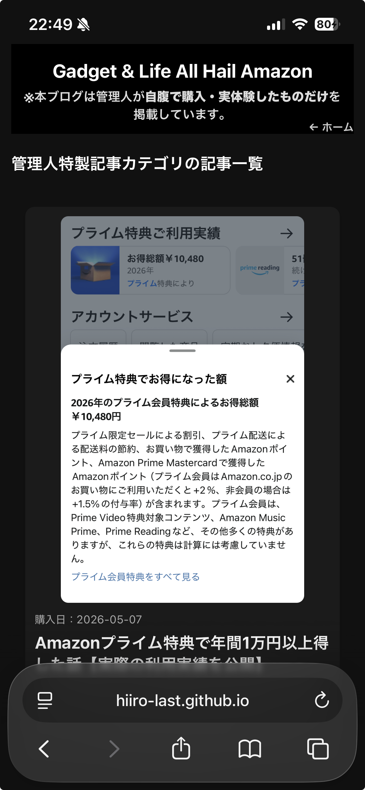

カテゴリ：管理人特製 / 管理人の実体験ベースのブログ運営メモ
ど素人がiPhoneとAIだけで1週間でブログを作れた話【管理人特製・実体験】
本記事には、広告・アフィリエイトリンクが含まれます。
リンクから商品・サービスの購入やお申し込みが発生した場合、管理人に収益が発生することがありますが、記載している内容は管理人自身の実体験と、可能な範囲で確認した事実・一般的な情報に基づいています。

この記事は、「Webコンテンツど素人の管理人が、iPhoneとAIだけを使って、約1週間で自分のブログを立ち上げた」という、かなりニッチな実体験の記録です。
いわゆる「ブログで一攫千金！」のような話ではなく、「なぜブログという選択肢にたどり着き、どうやって形にしたのか」を、管理人目線で淡々と残しておくことが今回の趣旨です。
なぜ、このブログが生まれたのか【第1回】
まず最初にお伝えしておきたいのは、このブログは管理人自身の実体験から生まれたということです。 もともとWeb制作の経験はなく、HTMLやCSSも「なんとなく聞いたことがある」程度の、典型的など素人スタートでした。
そんな状態からでも、「これなら続けられるかもしれない」と思えたのがブログでした。 その背景には、次のような条件を自分の中で決めていたことがあります。
ブログという選択肢にした3つの理由
- ① iPhoneだけのツールで完結し、無料であること
- ② 隙間時間で副業として成立する可能性があること
- ③ 自分の強みを活かせること
これら3つを満たす選択肢を考えたとき、「ブログならギリギリいけるかもしれない」という結論にたどり着きました。
① iPhoneだけ・無料であることへのこだわり
まず大前提として、PCを新しく買う・有料サーバーを契約する、といった初期投資は一切しないと決めていました。 仕事用のPCはあっても、個人の副業のために新しい環境を整えるのはハードルが高く、心理的にも財布的にも重いからです。
そこで条件にしたのが、「iPhoneだけで完結すること」と「基本は無料であること」。 実際、このブログも執筆・修正・公開まで、ほぼすべてをiPhoneベースで行っています。
② 隙間時間で副業として成立する可能性
次に意識したのが、「隙間時間で続けられるかどうか」という点です。 本業がある以上、まとまった時間を毎日確保するのは現実的ではありません。
ブログであれば、通勤時間・ちょっとした待ち時間・寝る前の30分など、細切れの時間を積み重ねて記事を作ることができます。 もちろん、すぐに大きな収益になるとは限りませんが、「積み上げがそのまま資産になる」という性質は、副業としての相性が良いと感じました。
③ 自分の強みを活かせること
そして3つ目が、「自分の強みを活かせるかどうか」です。 管理人の場合、仕事でデータ解析やツールの自動化に関わることが多く、「ロジックを組み立てる」「仕組みを作る」といった部分にはある程度慣れがありました。
そこで目をつけたのが、AI（特にCopilot）を活用したブログ構築です。 自分の強みである「考え方の整理」や「要件を言語化する力」と、AIの「コード生成・文章生成」を組み合わせれば、ど素人でもブログの形くらいなら作れるのではないか——そう考えたのが出発点でした。
きっかけは、仕事でCopilotにコードを書かせてみたこと
ブログに挑戦しようと思った直接のきっかけは、仕事でCopilotにプログラミングコードを書かせてみた経験です。
最初は「補助的に使えたらいいな」くらいの感覚だったのですが、実際に使ってみると、要件をきちんと伝えれば、かなり実用的なコードを生成してくれることが分かりました。
もちろん、そのままでは動かない部分もあり、微調整や検証は必要です。 それでも、ゼロから自力で書くのとは比べものにならないスピードで形になっていく感覚があり、「これはブログにも応用できるのでは？」と考えるようになりました。
そう気づいた瞬間から、「もしかしたら、ブログくらいなら作れるのでは？」という発想に一気にスイッチが入りました。
「解析ツールで終わるはずだったAI」がブログの相棒に
当初は、AIはあくまで「解析ツール」「コード補助ツール」として使うつもりでした。 しかし、実際に触ってみると、文章構成の提案・見出しの整理・SEOを意識したキーワードの洗い出しなど、ブログ運営にもそのまま使える要素が多いことに気づきました。
そこで、「ブログの土台となるHTMLやCSSも、Copilotに相談しながら作ってしまおう」と方向転換。 結果として、今ご覧いただいているこのブログの構造も、AIとの対話を重ねながら少しずつ形にしていったものです。
「もしかしてブログくらいなら作れるのでは？」から即行動へ
きっかけさえ見えてしまえば、あとは行動するだけです。 管理人は、「ブログくらいなら作れるのでは？」と思ったそのタイミングで、ほぼ勢いのまま着手しました。
実際にやったこと（ざっくり）
- ・iPhoneでメモアプリを開き、「どんなブログにしたいか」を箇条書きにする
- ・Copilotに「iPhoneだけでブログを作りたい」と正直に相談する
- ・GitHub Pages や Netlify など、無料で使える公開手段を教えてもらう
- ・index.html や 記事HTMLのたたき台をAIに生成してもらい、少しずつ修正する
- ・実際に公開して、スマホから表示を確認しながら微調整する
こうして、「Webど素人 × iPhone × AI」という組み合わせでも、約1週間でブログとして形になるところまで到達しました。 細かい改善点はまだまだありますが、「とりあえず公開して、走りながら直していく」というスタイルで運営しています。
閑話休題：現時点クリック数1位は「鼻腔拡張テープ」の記事
ここで少しだけ、ブログ運営らしい話を挟ませてください。 現時点で、このブログの中でクリック数1位になっているのが、「Amazon鼻腔拡張テープ クリア60枚入」のレビュー記事です。
実際の口コミや一般的な情報をもとに、価格・使い心地・貼り方のコツ・注意点などを整理した記事で、睡眠やいびき対策に関心がある方に多く読まれています。
記事はこちらからご覧いただけます（別タブで開きます）。
鼻腔拡張テープのレビュー記事を読む Amazonで鼻腔拡張テープの詳細を見る
※リンク先はAmazonの商品ページです。価格・在庫・キャンペーン情報などは変更される場合がありますので、最新情報は必ずAmazon上でご確認ください。
今回の記事で伝えたかったこと【まとめ】
第1回目となる今回は、「なぜこのブログができたのか」という背景に絞ってお話ししました。
- ・管理人自身の実体験から生まれたブログであること
- ・iPhoneだけ・無料・隙間時間・自分の強み、という条件からブログに行き着いたこと
- ・仕事でCopilotを使った経験が、「ブログもAIでいけるかも」という発想につながったこと
- ・ど素人でも、AIと対話しながらなら1週間ほどで形にできたこと
もちろん、これはあくまで管理人個人のケースであり、同じ結果を保証するものではありません。 それでも、「完全な初心者でも、条件を工夫しながらAIを活用すれば、ブログという選択肢は十分現実的になってきている」という感覚は、実体験としてお伝えできると感じています。